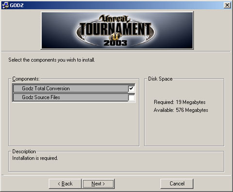

UDN
Search public documentation:
UmodInstaller
Interested in the Unreal Engine?
Visit the Unreal Technology site.
Looking for jobs and company info?
Check out the Epic games site.
Questions about support via UDN?
Contact the UDN Staff
Creating UMODs
Last updated by Richard 'vajuras' Osborne (UdnStaff) to apply code corrections. Original author was Richard 'vajuras' Osborne (UdnStaff).UMods
Umods (Unreal MOD) are platform independant archives that allow mod authors to ship their game content to unreal engine gamers. Umods possess the ability to install files, generate shortcuts, display license agreements, and many other nice capabilities. Users can easily download a umod and the files will be installed to the specified directories (like you would expect from an installer). There are many advantages of delivering a product within a umod:- Automatic Uninstall - Umods can easily be uninstalled by double clicking on setup.exe.
- Advanced Capabilities - Umods can basically do almost anything that any other commercial quality installer can do. Umods can generate shortcuts, display license agreements, import files from different source locations so that they can be 'dropped' with a different filename, and many other nice features.
- Platform Independence - Umods aren't bound to a specific Operating System.
- MultiLanguage Support - The same umod can be used to support multiple localizations. You can include license agreements and readme files for each different type of language.
The Composition
You only need three components to generate a umod:- UCC (System\UCC.exe) - this executable is used to run 'Commandlets'. UCC Master (MasterCommandlet) is a commandlet that can be executed from the command line. Running this command will generate the umod file.
- Mod.ini - defines the files that will be installed, groups, and many other tasks that the umod may perform.
- Mod.int - Provides additional product data such as Developer name, URL, Product URL, Version numbers, and shortcut captions.
Building the INI File
The UCC Master Commandlet uses the mod.ini file to define the overall structure of the umod archive. Umods can be really simple to build if you only specify files to copy or they become really complex once you start defining shortcuts and other nice advanced capabilities.The Setup Group
Let's start off by taking a look at the [Setup] group. This default group defines the Product that is being installed, attributes such as Language, Requirements, and Groups. Definitions:- Product - name of the product that is being installed. Insert the name of your mod for this entry.
- Language - type of language the mod.ini file is defining the settings for. As mentioned earlier, the same umod can be used for multiple languages.
- Version - version number of the product you are installing.
- Archive - defines the type of archive UCC Master will generate. For example,
Archive=GODZ.ut2mod
will generate a ut2mod. However, if you alter the extension to umod, then the archive will support Unreal Tournament. - Tree - defines a tree structure. This boolean argument tells UCC Master that this ini file defines selectable groups.
- SrcPath - instructs UCC Master where the source files will be imported from. Used for the Src option for File/Copy commands.
- MasterPath - used for the Master option for File/Copy commands.
- Requires - defines a requirement. It's very important that you define the master product that your product relies upon. Otherwise, the umod cannot load the default folder that it will be installed to. This makes things harder for your consumer to figure out.
- Patch - tells the MasterCommandlet that this product is a Patch.
- Visible - is applied to the Tree setting mentioned above. Set this attribute to True if you want your selectable groups to be visible.
- Group - defines the logical unit that references all the files that will be installed.
- License - defines the filename of the license agreement. The english language version should end with the .int file extension. For our example product, Godz, the recommended filename will be
GodzLicense.int
[Setup] Product=GODZ Language=int Version=100 Archive=GODZExtreme.ut2mod Tree=True SrcPath=. MasterPath=.. MasterPathUnrealGameContent=.. Requires=UT2003Requirement Visible=true Group=SetupGroup Group=GameGroup Group=HelpGroup License=GodzLicense.int
Requirement Section
A requirement section defines the products your product that you are installing to the client machine depends upon. For a UT2003 modification, this requirement is UT2003. Whenever the client double clicks on the umod, the Setup.exe application loads and it unpackages the umod. Setup checks the local manifest.ini for the game engine and ensures the version number and product matches the requirements. As a word of caution, never overwrite the client's manifest.ini file. Note, you can define mutliple requirements.- Product - defines the product that the client must possess on their machine in order to install your modification.
- Version - defines the version number that this product requirements. The client can possess a version number higher than what you require but not less. Leave this argument blank if all versions of the game engine is acceptable.
[UT2003Requirement] Product=UT2003 Version=2166
Group Section
A group section defines which files will be installed to the target location. You can do a lot of things with groups such as define shortcuts, how the group will be displayed, wildcards, etc. Note, you can define multiple groups.- Optional - If you defined the Tree atrribute in the global Setup section, this option is used to determine whether this group is required or not. If it's required, clients can't deselect this group option.

- Selected - defines the default state of the group (checkbox). If it's set to True, the group is automatically selected.
- Selectable - defines whether the group can be selected/changed.
- Visible - defines the visibility of this option.
- Copy - copies the selection into the umod. Using the Flags=3 option applies a special flag that actually updates the destination file. In the case of a umod, this flag causes the umod to update the client's manifest.ini file with installation data that later allows Setup.exe to uninstall your product. In most cases, Copy works similar to the File directive. You can define multiple Copy directives.
- File - copies the selection into the umod. You can define multiple File directives.
- Src - is an attribute of File/Copy directives. It defines the file that will be copied into the umod. The SrcPath is used by UCC Master to find the argument.
- Master - is an attribute of the File/Copy directives. When used in conjunction with the Src attribute, it defines the source file. UCC Master then proceeds to use the Src attribute to indicate the target filename. Useful for importing the Default.ini and exporting it as your modifications ini file (like Godz.ini).
File=(Src=System\GodzUT2003.ini, Master=Test.ini)
- Compress - is an attribute of the File/Copy directives. Currently compression is not supported for umods.
- MasterRecurse - is an attribute of the File/Copy directives. When used in conjunction with a wildcard, this flag will cause UCC Master to recurse into child directories, importing all files that conform to the filter.
- Shortcut - directive defines a shortcut that is related to this group. The value of this directive should indicate the shortcut section that will be created on the client.
- WinRegistry - updates the windows registry with a new key/value. This option will only work on the Windows Operating System.
- Ini - modifies a key in the INI file.
Ini=<Ini File>,<Section>,<key>=<new value>
- AddIni - adds a key to the specified INI file. If the section does not exist, it will be created. If the specified INI file does not exist, an empty INI file will be created by the installer.
AddIni=<Ini File>,<Section>,<key>=<new value>Below is an example of the SetupGroup and another Group section:
[SetupGroup] Copy=(Src=System\Manifest.*,Flags=3) Copy=(Src=System\GodzLicense.*) [GameGroup] Optional=False Visible=True Selected=True File=(Src="Maps\DM-[Godz]*.ut2") WinRegistry=HKEY_LOCAL_MACHINE\TestMod\%Product%\DisplayName=%LocalProduct% Ini=System\Test.ini,ALAudio.ALAudioSubsystem.UseEAX=True AddIni=Test.ini,New.Hello=2 [HelpGroup] Optional=False Visible=False File=(Src=Godz_GameData\Help\GODZ.htm,Lang=int) File=(Src=Godz_GameData\Help\*.gif,MasterRecurse=True) File=(Src=Godz_GameData\Help\*.jpg,MasterRecurse=True) File=(Src=Godz_GameData\Help\*.ico,MasterRecurse=True)
Shortcut Section
Umods can install shortcuts on the client machine. Note, at this time, only Windows Operating Systems machines support this feature.- Template - indicates the actual shortcut. You shouldn't have to change this line.
- WorkingDirectory - indicates the directory the shortcut will operate within (think of a Shell Execute command). You shouldn't have to change this.
- Command - indicates the application you wish to execute.
- Parameters - is the argument list you wish to pass to the application.
- Icon - is the path on the client machine to the icon you wish to use for this shortcut.
[PlayShortcut] Template=%CommonProgramsPath%\%LocalProduct%\%Caption%.lnk WorkingDirectory=%DestPath%\System Command=%DestPath%\System\UT2003.exe Parameters=-MainMenu=GodzMenu.GodzMainMenu -UserINI=GodzUser.ini Icon=%DestPath%\Help\Unreal.ico [DocumentationShortcut] Template=%CommonProgramsPath%\%LocalProduct%\%Caption%.lnk WorkingDirectory=%DestPath% Command=%DestPath%\ReadMe.%Language%.txt Parameters= Icon= [UninstallShortcut] Template=%CommonProgramsPath%\%LocalProduct%\%Caption%.lnk WorkingDirectory=%DestPath%\System Command=%DestPath%\System\Setup.exe Parameters=uninstall "%Product%" Icon=%DestPath%\System\Setup.exe,0Notice for the PlayShortcut section, the Parameters directive passes additional arguments to the unreal engine. Also, notice that the DocumentationShortcut section defines a localization dependant readme file for the Command directive.
Building the INT File
The int file extension represents English/International. The int file is localization dependant, allowing you to specify different settings for each localization w/o having to change your ini file.- LocalProduct - product name (name of the product being installed)
- ReadMe - defines the readme file that will be used for this localization. This file is automatically imported.
- SetupWindowTitle - is the title displayed at the top of the umod installer for this localization.
- ProductURL - website dedicated to the product itself
- VersionURL - website dedicated towards this version
- Developer - developer website
- DeveloperURL - URL of the developer of the umod
- License - (optional) license agreement file for this localization.
[Setup] LocalProduct=GODZ ReadMe=Godz_GameData\Help\GODZ.int.htm SetupWindowTitle=GODZ AutoplayWindowTitle=GODZ Extreme Options ProductURL=http:\\www.planetunreal.com\godz VersionURL=http:\\www.planetunreal.com\godz Developer=GodLike Development DeveloperURL=http:\\www.planetunreal.com\godz License=GodzLicense.int
Requirement Section
This section defines the attributes for the requirement.- LocalProduct - name of the product required by the umod.
- ProductURL - website dedicated to the product
- VersionURL - website dedicated towards this version
- Developer - developer website
- DeveloperURL - URL of the developer of the umod
[UT2003Requirement] LocalProduct=UT2003 ProductURL=http://www.unrealtournament2003.com/ VersionURL=http://unreal.epicgames.com/ Developer=Epic Games, Inc. DeveloperURL=http://www.epicgames.com/
Shortcut Section
Defines the captions for the shortcut for this localization.- Caption - name of the shortcut link
Group Section
Defines the captions for the groups that are displayed to the user.- Caption - name of the Group
- Description - group description
Multiple Language Support
For each language your umod supports, you can define a different int file. So for the spanish version, your mod.int needs to be renamed to mod.est. Within the spanish est file, you can define the spanish version of your license agreement and spanish equivalents for captions, etc. The readme argument in the Setup section should change to indicate the spanish version like:ReadMe=Help\ReadMe.est.txtInt file extensions:
| int | English/International |
| est | Spanish |
| det | Deutsch |
| frt | French |
| itt | Italiano |
Creating a Total Conversion Umod
The exciting thing about the unreal engine is that the engine can be totally reconfigured using ini files. However, I've found that many mod authors make the assumption that the ini files are the exact same for all operating systems. Nothing could be farther from the truth- the ini files differ for each client version of the unreal engine. This is because the RenderDevice differs for each Operating System. This is an example taken from UT2003.ini:[Engine.Engine] RenderDevice=D3DDrv.D3DRenderDevice ;RenderDevice=Engine.NullRenderDevice ;RenderDevice=OpenGLDrv.OpenGLRenderDeviceThe Windows version uses Direct 3D. However, the Linux client uses Open GL by default. Additionally, the user.ini files differ for each OS depending on the keyboard. There is a platform independant solution however. When starting the unreal engine (like UT2003), specify the ini/user ini files you wish to use via command line using a shortcut, batch file, or shell script. The following sample is the syntax used to invoke UT2003 on a Windows machine:
UT2003 -ini=godz.ini -userini=godzuser.iniIf the engine detects these ini files do not exist, then they will be generated on-the-fly based on the client's baseline files (default.ini and defuser.ini). Default.ini and DefUser.ini are the default files included with every unreal engine distribution. They specify the default settings that the game will start with. Anyway, the advantage of this method is that the vast majority of the settings in the ini files can be configured from just plain old unrealscript code. Some of you skeptics might think this feat is impossible but it's not when you realize that most of these objects, even though they are native C++ UObject subclasses, are still visible to unrealscript. Actually, the correct term would be that their String variables are accessible from unrealscript via SetPropertyText and GetPropertyText calls. Below is some settings that gets configured by a main menu when it detects that the ini needs to be initialized (just been created by the engine). For this code sample to work, you'd need to start the engine using a shortcut/batch script using these arguments (Windows sample):
UT2003 -MainMenu=<Package>.GodzMainMenu -ini=godz.ini -userini=GodzUser.iniThis is the code sample used for my modification:
class GodzMainMenu extends GUIPage
config(GodzUser);
var const int KeyConfigVersion;
var config int GodzVersion; //Godz User.ini version
var array<string> GodzPackages; //Package List
function InitComponent(GUIController MyController, GUIComponent MyOwner)
{
local GameEngine gEngine;
local int index, i, j;
local string args;
local array<string> missingPackages; //new packages that will be written to Godz.ini
local bool bFound;
Super.InitComponent(MyController, MyOwner);
//Install GODZ soundtrack...
PlayerOwner().GetEntryLevel().Song="GODZ";
if (GodzVersion != KeyConfigVersion)
{
//Setup INI Files on first INI creation....
log("Initalizing Godz INI settings...");
//Add the new GODZ ServerPackages...
foreach AllObjects(class'Engine.GameEngine', gEngine)
{
index = gEngine.ServerPackages.Length;
for (i = 0; i < GodzPackages.Length; i++)
{
bFound=false;
for (j = 0; j < gEngine.ServerPackages.Length; j++)
{
//Evaluate if the ServerPackage already exists...
if (gEngine.ServerPackages[j] == GodzPackages[i])
{
bFound=true;
break;
}
}
if (!bFound)
{
//Add the package to the list of missing packages
index = missingPackages.Length;
missingPackages.Length = index + 1;
missingPackages[index] = GodzPackages[i];
log("Adding missing package "$GodzPackages[i]);
}
}
if (missingPackages.Length > 0)
{
//Add the Missing Packages to the ini file.
index=gEngine.ServerPackages.Length;
log("Missing Packages:"$missingPackages.Length);
gEngine.ServerPackages.Length = index + missingPackages.Length;
for (i = 0; i < missingPackages.Length; i++)
{
//Find the empty server packages slot
//Append the ServerPackages to the ini file.
gEngine.ServerPackages[index]=missingPackages[i];
log("Adding missing package to ini "$missingPackages[i]);
index++;
}
//Save the Settings....
gEngine.saveConfig();
} // if
} // update ini
//Update the Paths
args="(\"../System/*.u\",\"../Maps/*.ut2
\",\"../Textures/*.utx\",\"../Sounds/*.uax\",\"../Music/*.umx\",\"../StaticMeshes/*.usx\",
\"../Animations/*.ukx\",\"../Godz_GameData/Animations/*.ukx\",
\"../Godz_GameData/Saves/*.uvx\",\"../Saves/*.uvx\"";
PlayerOwner().ConsoleCommand("Set System Paths "$args);
//update key config version
GodzVersion=KeyConfigVersion;
SaveConfig();
//Update the SavePath for SaveGames (Save.usa)
PlayerOwner().ConsoleCommand("Set System SavePath ../Godz_GameData/Save");
//setup default character
PlayerOwner().UpdateURL("Character","Ryotian",true);
PlayerOwner().UpdateURL("Name","NewBorn",true);
//install default key settings
PlayerOwner().ConsoleCommand("Set Input Q ChargeQI | OnRelease EndRecharging");
PlayerOwner().ConsoleCommand("Set Input Shift SpeedBoost | OnRelease EndSpeedBoost");
PlayerOwner().ConsoleCommand("Set Input P SwitchViewpoint");
PlayerOwner().ConsoleCommand("Set Input F Flight");
}
}
defaultproperties
{
KeyConfigVersion = 100
GodzPackages(0)="GodzEffects"
GodzPackages(1)="Godz"
GodzPackages(2)="GodzAttacks"
GodzPackages(3)="GodzMagus"
}
The code above detects that the ini is new or needs to be updated by searching for an indicator (using the GodzVersion config variable). Next, it begins to configure the default player, keyboard settings, Server Packages List, and many other niffty settings on-the-fly. The code is also very dynamic and compensates for patches. So if you later release an update to your mod, simply increment KeyConfigVersion to a higher value and their settings will be repopulated (certain keyboard settings would be erased by this code sample however).
Wrapping it all up
Before you run UCC Master I want to mention something very important. UCC Master overwrites your manifest.ini file. So make sure you backup your manifest.ini before running the UCC Master command. Additionally, make sure you remove manifest.int after you generate your umod. This is an example of a batch file you can use the execute UCC Master:@echo off copy manifest.ini manifest_backup.ini ucc master MyMod del manifest.int copy manifest_backup.ini manifest.ini del manifest_backup.ini pauseExample INI File:
[Setup] Product=GODZTestUT Language=int Version=100 Archive=GODZTest.ut2mod SrcPath=. MasterPath=.. MasterPathUnrealGameContent=.. Group=SetupGroup Group=rats [SetupGroup] Copy=(Src=System\Manifest.*,Flags=3) Copy=(Src=System\GodzLicense.int) Shortcut=PlayShortcut Shortcut=UninstallShortcut Ini=System\Test.ini,ALAudio.ALAudioSubsystem.UseEAX=True AddIni=Test.ini,New.Hello=2 [rats] File=(Src=TestFile.txt) File=(Src=System\GodzUT2003.ini, Master=Default.ini) [PlayShortcut] Template=%CommonProgramsPath%\%LocalProduct%\%Caption%.lnk WorkingDirectory=%DestPath%\System Command=%DestPath%\System\UT2003.exe Parameters=-MainMenu=hello Icon=%DestPath%\Help\Unreal.ico [UninstallShortcut] Template=%CommonProgramsPath%\%LocalProduct%\%Caption%.lnk WorkingDirectory=%DestPath%\System Command=%DestPath%\System\Setup.exe Parameters=uninstall "%Product%" Icon=%DestPath%\System\Setup.exe,0Example INT file:
[Setup] LocalProduct=GODZTestUT ReadMe=readme.txt SetupWindowTitle=Test MOD AutoplayWindowTitle=Test MOD ProductURL=www.product.com VersionURL=www.version.com Developer=godz DeveloperURL=www.godz.com [PlayShortcut] Caption="hello" [UninstallShortcut] Caption="UnInstall GODZTestUT"